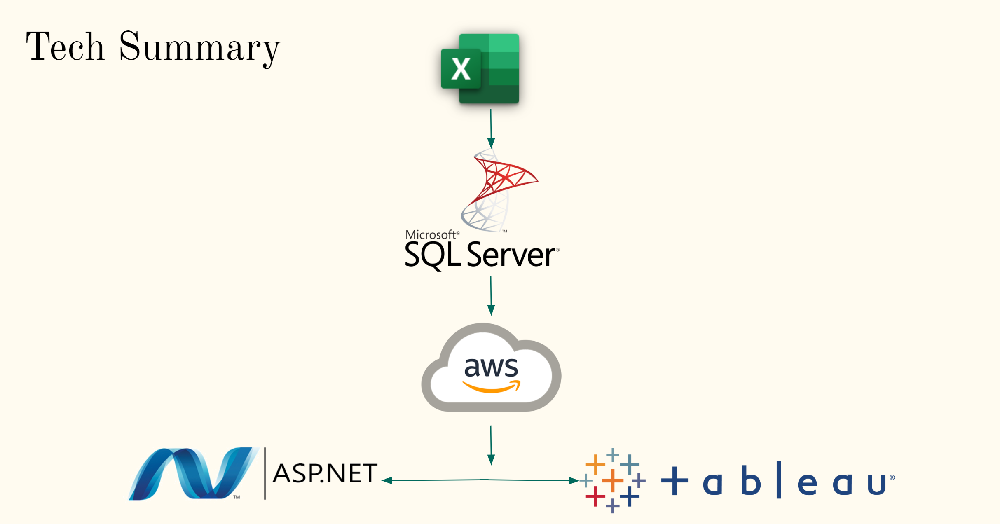

Fag El Gamous Burial Site
- Organize the data and develop a website where this information can be shared with researchers and interested members of the public around the world.
- Allow the research team to view, filter, and query this data in many ways so they can answer a variety of academic research questions.
- Enable the research team to enter data while at the dig site. The site recently gained access to 3G cellular data speeds, and the ability to enter field notes and other data directly to the database is desirable.


Technologies
- .NET 5.0
- MSSQL
- Bootstrap
- Tableau
- AWS Elastic Beanstalk
Website Sections
- Landing Page
- List of All Burials
- Interactive Map
- Filter Burials
- Login
- Researcher Edit Record
- Researcher View Data Page
Github Link
https://github.com/huygg1004/INTEX_PROJECT